计算机网络
Network
- 内容 Contents
- 概述-自学
- 体系结构
- 基本技术-自学
- 互联网概述-自学
- Internet基本应用-自学
- 网络信息安全-自学
概述
- 定义
- 一般认为，计算机网络是通过通信设施，将地理上分散的具有自治功能的多个计算机系统互连起来进行信息交换，实现资源共享、互操作和协同工作的计算机系统。 该定义包括如下特征
- 系统互连要通过通信设施来实现。通信设施一般都由通信线路、相关的传输设备及交换设备等组成
- 计算机网络是一个互连的计算机系统。这些计算机系统在地理上是分布的
- 这些计算机系统是自治的，在网络协议控制下协同工作
- 系统通过通信设施执行信息交换、资源共享、互操作和协作处理，实现各种应用需求。
- 构成
- 通信子网
- 资源子网
- 分类
- PAN - Personal Area Network
- LAN - Local Area Network
- MAN - Metropolitan Area Network
- WAN - Wide Area Network
- 公用网络：互联网
- 专用网络：银行系统、铁路系统和军队系统
- 星型 Star
- 环型 Ring
- 总线型 Bus
- 混合型 Hybrid
- 功能
- 资源共享
- 数据传输
- 集中管理
- 分布处理
- 负载平衡
- 提高安全与可靠性
- 发展
按照地理覆盖范围
按照网络使用者
按照拓扑结构
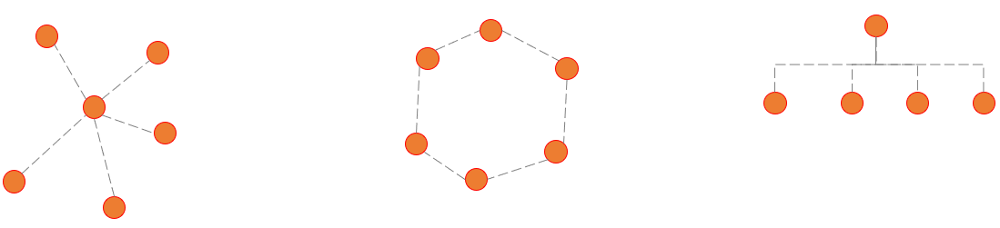
OSI参考模型
- 概述
- 计算机网络体系结构是指计算机网络层次结构模型和各层协议的集合；也称为协议集或 协议栈
- 计算机网络采用 层次化 设计方法，把通信过程划分为多个层次，并为每个层次设计一个单独的协议，这些协议通过分层结构进行组织
- 每层通过特定的协议完成一种功能；多层叠加完成整个信息的发送和接收过程
- 最著名的网络体系结构是OSI参考模型和TCP/IP协议
- 分层原则
- 各层之间是相互独立的
- 每一层需要有足够的灵活性
- 各层之间完全解耦
- 分层优点
- 高层不需要知道低层是如何实现的，只需要知道低层所提供的服务，以及本层向上提供的服务，各层独立性强
- 当任何一层发生变化时，只要层间接口不发生变化，那么这种变化就不会影响到其他的层，适应性强
- 整个系统分解为若干易于处理的部分，这种结构使得一个庞大而又复杂的系统实现和维护起来更容易
- 每层的功能与所提供的服务都有精确的定义和说明，有利于促进标准化
- 开放式系统互联参考模型 - Open System Interconnection Reference Model，OSI Model
- 开放：是指遵循OSI标准的任何系统之间均可通信
- 系统：是指各系统中与互联有关的部分
- 这一标准定义了网络互联的7层框架
- ISO开放系统互联模型实现了系统间的互联性、互操作性和可移植性
- all people seem to need data photo
- 物理层 Physical Layer
- 协议数据单元PDU：比特 bit
- 连接不同的物理设备，为上层协议提供了一个传输数据的可靠的物理媒体
- 主要内容：电路接口|机械特性、功能特性|引脚的高低电平、规程特性|事件的发生顺序、电气特性|传输信号的意义，如二进制定义
- 主要设备：中继器 Repeater、集线器 Hub
- 信道的基本概念：信道是往一个方向传输信息的媒体，一条通信电路包含一个发送信道和一个接受信道
- 单工通信信道 Single complex：只能一个方向通信，没有反方向反馈的信道
- 半双工通信信道 Half- complex：双方都可以发送和接受信息，但不能同时发送也不能同时接收
- 全双工通信信道 Full- complex：双方都可以同时发送和接收
- 数据链路层 Data Link Layer
- 协议数据单元PDU：帧 Frame
- 在物理层提供的服务的基础上向网络层提供服务：将源自网络层的数据可靠地传输到相邻节点的目标机网络层。在不可靠的物理介质上提供可靠的传输
- 主要功能：封装成帧、透明传输、差错控制、流量控制、传输管理
- 经典协议：PPP协议
- 主要设备：交换机 Switch、网桥 Bridge
- 网络层 Network Layer
- 协议数据单元PDU：数据包 Packet
- 实现两个端系统之间的数据透明传送，包括寻址和路由选择、连接的建立、保持和终止等
- 采用储存转发方式
- 主要功能：路由选择、规划IP地址、流量控制、差错控制、拥塞控制
- 经典协议：IP、ICMP、IGMP、ARP
- 主要设备：路由器 Router
- 传输层 Transport Layer
- 协议数据单元PDU：用户数据报 UDP和报文段TCP
- 端到端，即主机到主机的层次
- 传输层负责将上层数据分段并提供端到端的、可靠的或不可靠的传输。此外，传输层还要处理端到端的差错控制和流量控制问题
- 网络层只是根据网络地址将源结点发出的数据包传送到目的结点，而传输层则负责将数据可靠地传送到相应的端口
- 主要功能：流量控制、差错控制
- 经典协议：TCP、UDP
- 主要设备：网关 Gateway
- 会话层 Session Layer
- 主要功能：利用传输层端到端的服务，来在网络设备之间建立连接并有序地传输数据。并建立同步信息
- 表示层 Representation Layer
- 主要功能：定义数据的编码格式、是否进行数据压缩、加密/解密等操作
- 应用层 Application Layer
- 主要功能：定义数据的编码格式、是否进行数据压缩、加密/解密等操作
- 设计缺陷
- 过于理想化，无法实现
- 先于网络产生，不符合网络实际发展
- 每一层之间划分过于绝对，复杂，过度追求完美
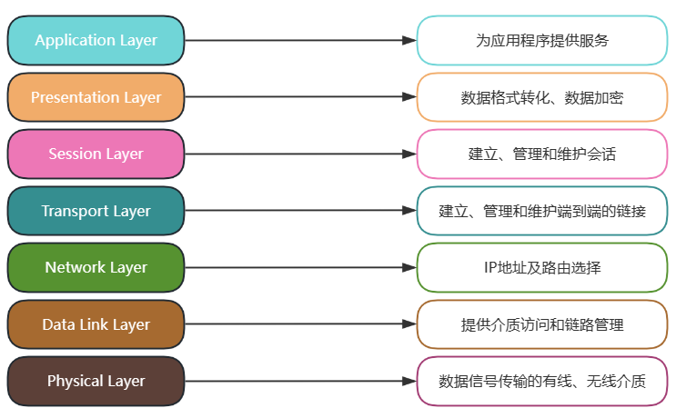
PDU - Protocol Data Unit
协议数据单元：每层协议规定的数据传输单位
TCP/IP4层模型
- 1. 标准模型
- 2. 对等模型
- 应用层 Application Layer
- Telnet - 远程登陆；基于TCP
- HTTP - Hypertext Transfer Protocol，超文本传输协议；基于TCP
- HTTPS - Hypertext Transfer Protocol Secure，安全的超文本传输协议；基于TCP
- FTP - File Transfer Protocol，文件传输协议；基于TCP
- SMTP - Simple Mail Transfer Protocol，简单邮件传输协议，一种用于发送电子邮件的协议。它定义了电子邮件的传输方式，负责将邮件从发件人的电子邮件服务器发送到接收人的电子邮件服务器。SMTP负责处理邮件的路由和传输，确保邮件能够准确地传递到目标服务器 ；基于TCP
- POP3 - Post Office Protocol 3，用于接收电子邮件的协议。它允许用户从邮件服务器上下载和接收邮件，如Outlook；基于TCP
- DNS - Domain Name System，域名系统
- DHCP - Dynamic Host Configuration Protocol，动态主机分配协议
- SNMP - Simple Network Management Protocol，简单网络管理协议；一种用于网络管理的应用层协议。它允许网络管理员监视和管理网络设备、服务器、路由器和其他网络设备的运行状态和性能；基于UDP协议
- RIP - Routing Information Protocol，路由信息协议，主要的路由协议之一；基于UDP协议
- 传输层 Transport Layer
- TCP - Transmission Control Protocol，传输控制协议；面向连接，可靠
- UDP - User Datagram Protocol，用户数据报协议；无连接、最大努力交付；直播流
- 两者都具备流量控制和拥塞控制
- 网络层 Network Layer
- IP - Internet Protocol，互联网协议
- ARP - Address Resolution Protocol，地址解析协议
- RARP - Reverse Address Resolution Protocol，逆地址解析协议
- ICMP - Internet Control Message Protocol，Internet控制报文协议
- IGMP - Internet Group Management Protocol，Internet组管理协议
- OSPF - Open Shortest Path First，开放的最短路径优先协议，基于IP协议，主要的路由协议之一
-
网络协议关系ARP协议为IP协议提供服务，IP协议为ICMP协议提供服务，ICMP协议为IGMP协议提供服务。
- 物理层 Physical Layer
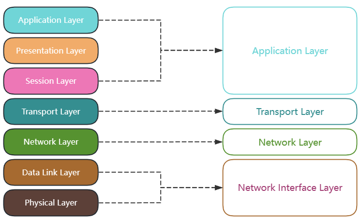
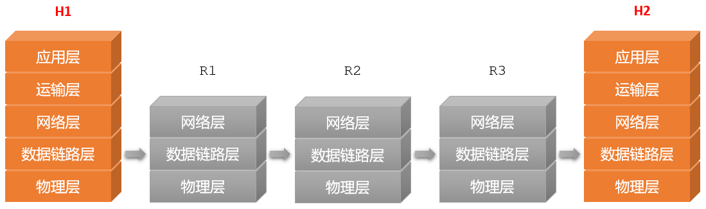
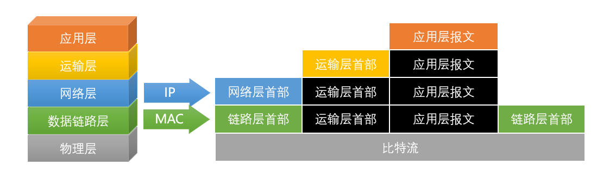
| Layer | ||||
|---|---|---|---|---|
| 应用层 | HTTP/HTTPS | SMTP | FTP | DNS |
| RIP | POP3 | SNMP | Telnet | |
| 传输层 | TCP | UDP | ||
| 网络层 | IGMP | ICMP | ||
| IP | ||||
| ARP | ||||
| 链路层 | PPP | Ethernet | ||
| 物理层 | ... | |||
局域网技术
- 局域网组成
- 局域网 LAN
- 以太网 Ethernet
- 无线局域网 WLAN
- 网络传输媒质
- 局域网互联设备
- 物理层设备
- 由于存在损耗, 线路上传输的信号功率会逐渐衰减，衰减到一定程度时将造成信号失真，导致接收错误。中继器可以解决这一问题
- 连接两个网络节点，负责物理信号的双向转发工作，完成信号的复制、调整和放大 ，延长网络长度，使信号传的更远
- 最简单的网络互联设备
- 物理层设备
- 能够提供 多端口 服务：把每个输入端口的信号放大再发到别的端口去，也称多口中继器
- 每个口都能连计算机：可以实现多台计算机之间的互联
- 数据链路层设备
- 连接局域网LAN，根据MAC地址来转发帧，扩展网络的距离
- 可以看作一个低层的路由器
- 数据链路层设备
- 具备自动寻址能力和交换作用
- 维护一张MAC地址表，根据MAC地址转发数据帧到指定端口
- 数据帧的转发由硬件完成，交互速度非常块
- 常常用来连接独立的计算机，端口非常多
- 网络层设备
- 用于连接多个逻辑上分开的网络，实现网络的互连和隔离
- 根据路由协议，选择合适的路由，将IP数据报传送到目标网络
- 路由过程：检查接收到的数据包的IP地址，如果目标网络是本地网络，不予理会；如果是其他网络，就将数据包转发出通过相应的端口转发出去；如果没有找到目标网络，就把数据包送给缺省网关default gateway
- 维护一个路由表，对于每一个接收到的数据包，路由器都会 重新 计算并更新路由表
- 使用专门的软件协议从逻辑上对整个网络进行划分，每个网络可以使用不同协议和体系结构，保持各个网络的独立性
- 网络中的设备使用IP地址互相通信。IP地址是与硬件地址无关的逻辑地址。Internet就是成千上万个IP子网通过路由器互连起来的国际性网络
- 物理层设备
- 早期称为网卡，是独立设备；现在都是集成在主板上
- 有自己的处理器和存储器（包括RAM和ROM）
- 连接主机和局域网的设备：网卡和局域网之间通过电缆或双绞线以串行传输方式通信；而网卡和计算机之间通过计算机主板上的I/O总线以并行传输方式通信
- 由于网络上的数据率和计算机总线上的数据率并不相同，因此在网卡中还必须装有对缓存数据的存储芯片
- 网络层设备
- 网络的关口，连接两个不同网络的接口,又称网间连接器、协议转换器
- 使用在不同的通信协议、数据格式或语言，甚至体系结构完全不同的两种网络系统之间
- 实现网络互连，是最复杂的网络互连设备，仅用于两个高层协议不同的网络互连
- 既可以用于广域网互连，也可以用于局域网互连。网关是一种充当转换重任的计算机系统或设备
- 是一个翻译器：与网桥只是简单地传达信息不同，网关对收到的信息要重新打包，以适应目的系统的需求
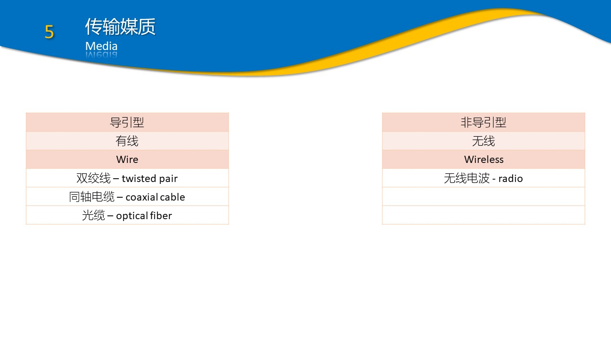
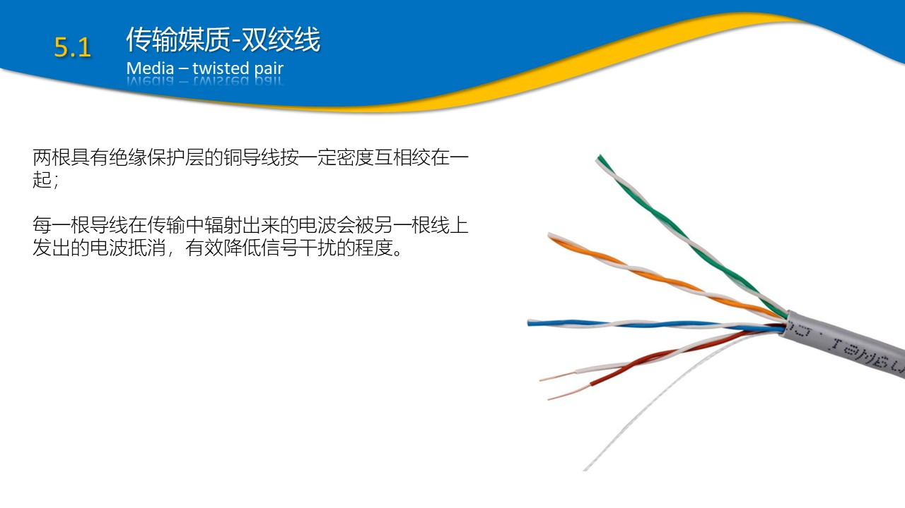
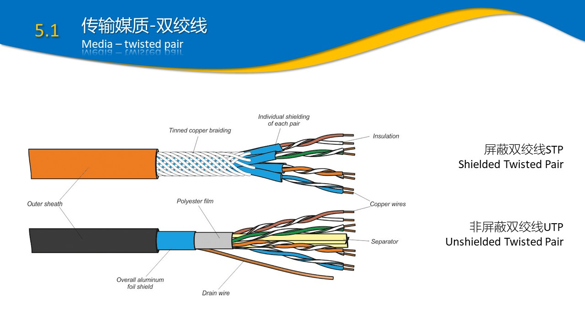
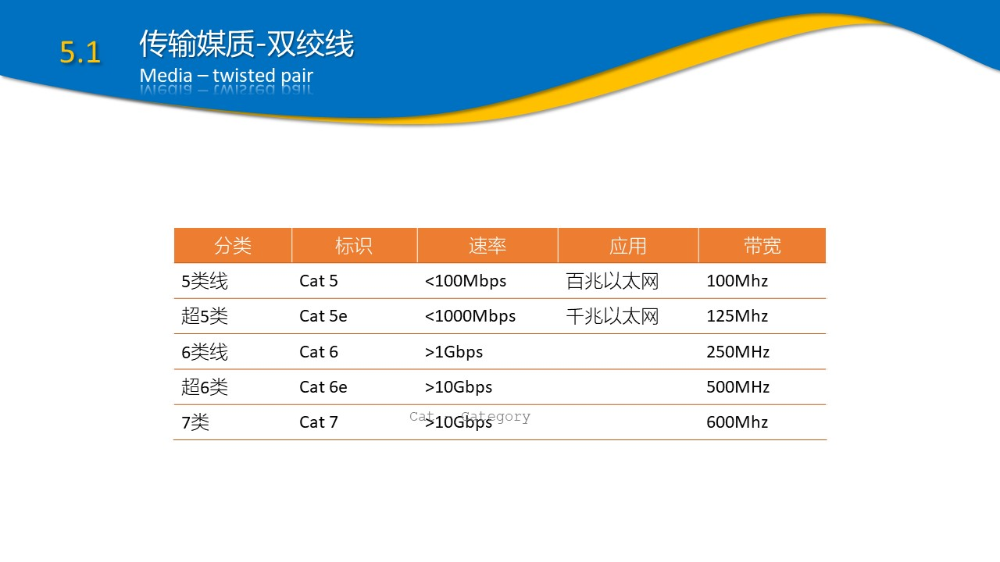
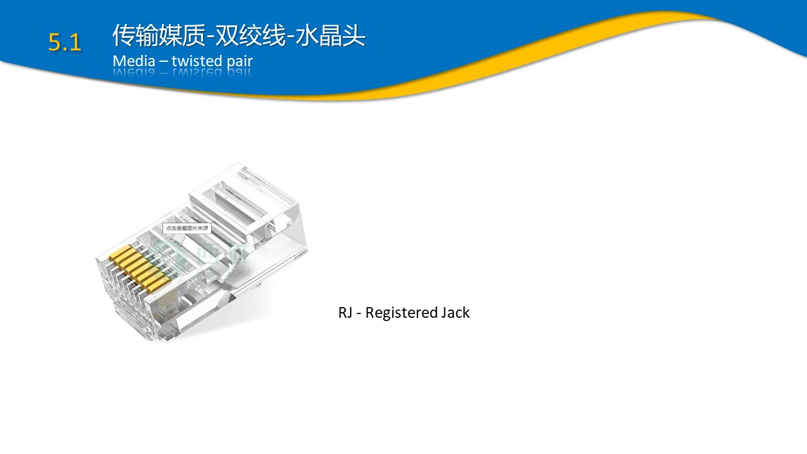
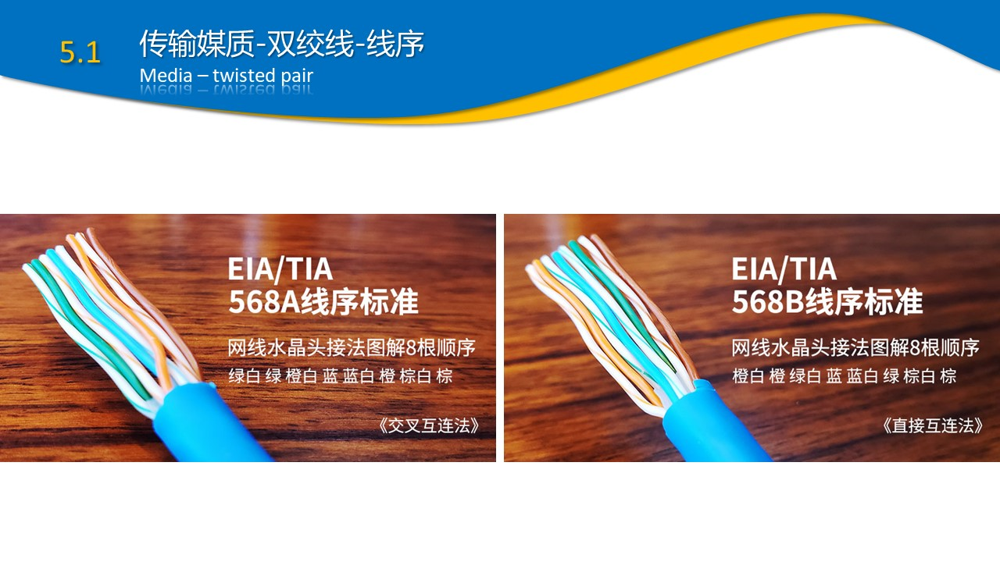
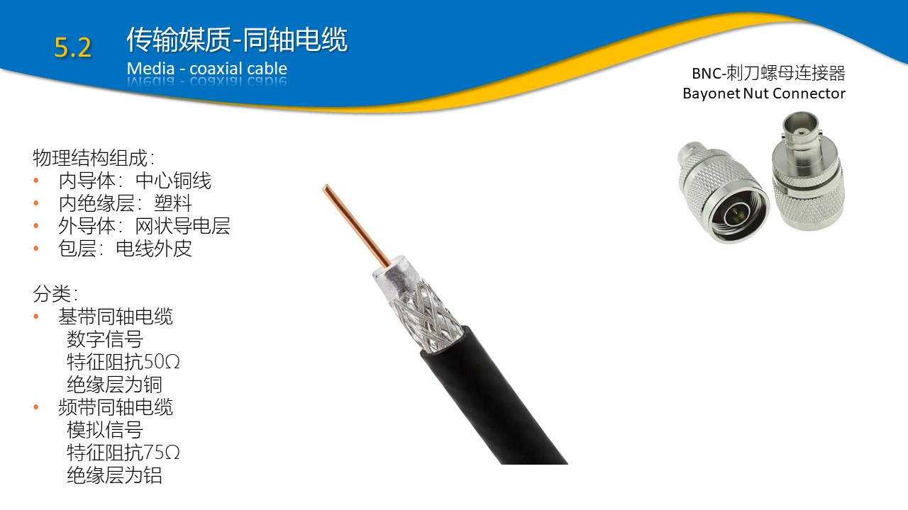
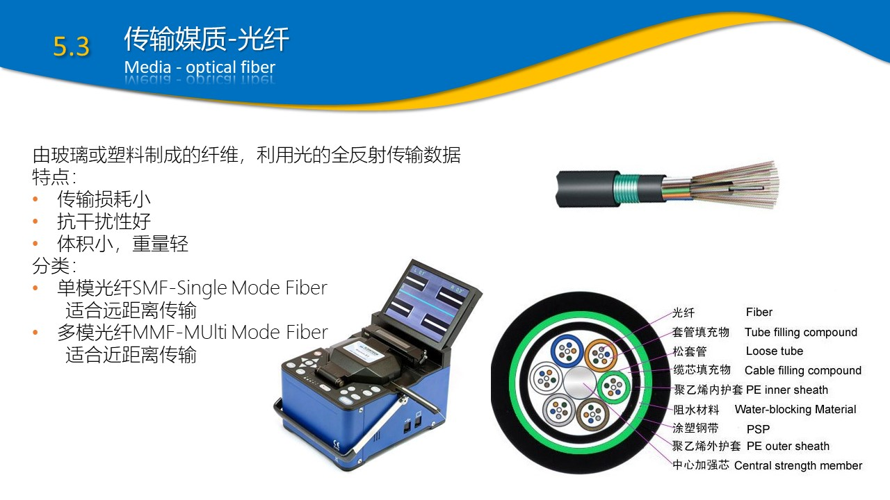
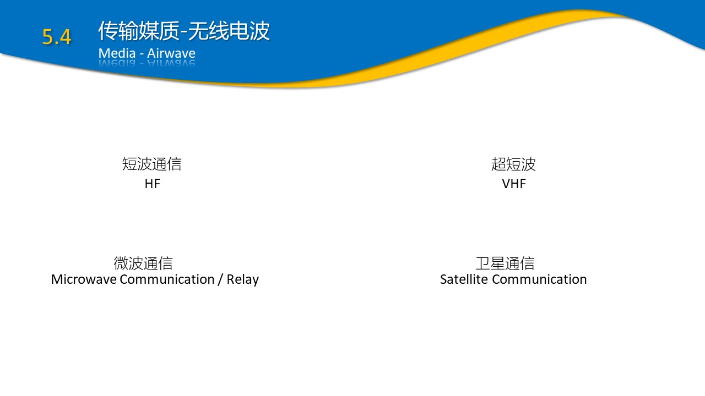
观看资料区视频：双绞线制作、光纤、无线电
1. 中继器 Repeater

2. 集线器 Hub

3. 网桥 Bridge
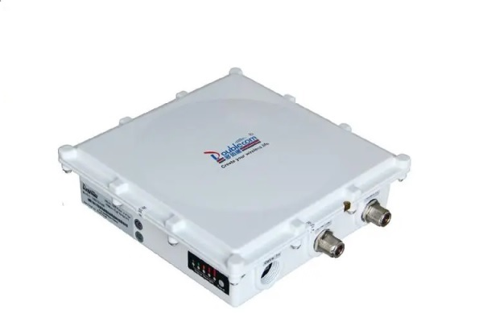
4. 交换机 Swich
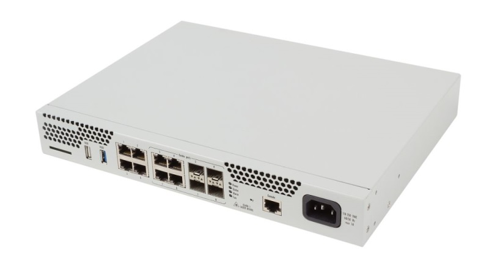
5. 路由器 Router
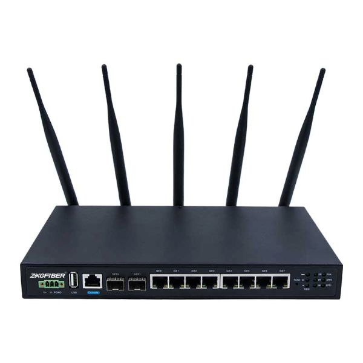
6. 网卡|适配器 Adapter
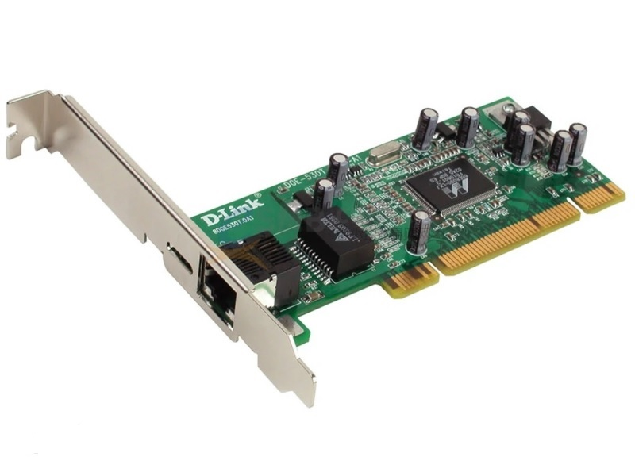
7. 网关 Gateway
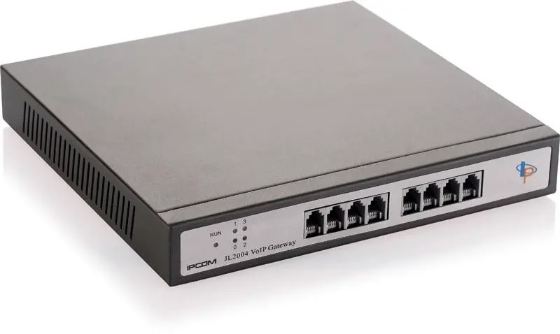